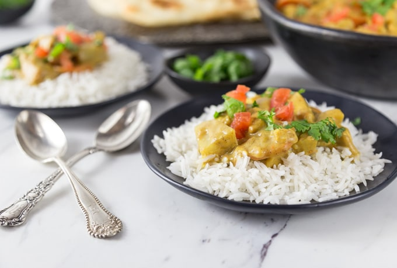

Home Page
Almond Butter Curry

A nutty infusion of Indian herbs and spices. The fresh ginger lends a zingy twist to the boiled rice. Once the
chicken is braised in the coconut-almond mixture, the dish really comes to life!
Ingredients
- 2 lbs chicken breast boneless, skinless
- 1 tsp kosher salt
- 3 tsp vegetable oil
- 2 tsp cornstarch
- 2 tsp curry powder
- 1 onion small, diced
- 2 garlic cloves, minced
- 1 cup water
- 1 ½ tsp ginger, fresh minced
- 1 carrot, large sliced
- 1 baking potato, peeled and cubed
- 1 cup lite coconut
- 2 Tbsp almond butter, MaraNatha Creamy No Stir Almond Butter
- ¼ tstp cayenne pepper
- 1 roma tomato, cored, diced and minced
- 2 Tbsp cilantro, chopped
Instructions
- Cut chicken breast into 1" cubes, and sprinkle with salt.
- In a braising pan of large skillet heat oil on medium, add chicken, and cook for about 5
minutes, turning often to get it brown on all sides.
- Sprinkle with cornstarch, and curry.
- Add onions and garlic, and stir for an additional 5 minutes. Add water if you need to
deglaze the pan.
- Add the ginger, carrots and potatoes. Cover and cook for about 20 minutes, on medium, or
until the potatoes being to soften.
- In a glass dish whisk together the coconut milk, and the almond butter, until they are fully integrated.
- Pour coconut milk mixture over the chicken. Stir in the cayenne.
- Simmer uncovered for about 5 minutes until the liquid begins to thicken.
- Add in the tomatoes and sprinkle in the cilantro. Serve with basmati rice and also naan bread if desired.